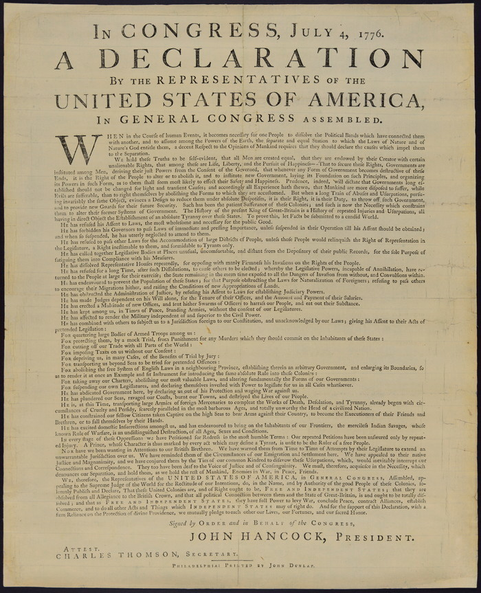
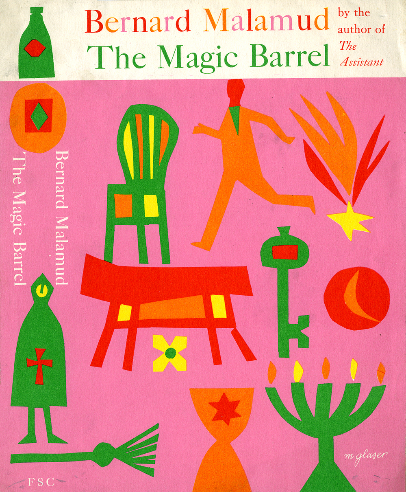
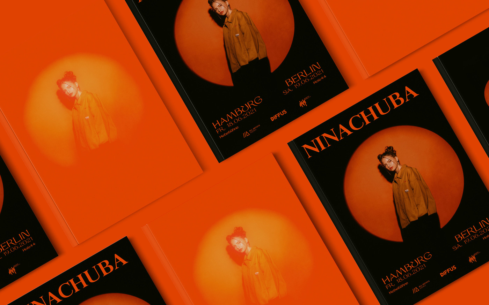
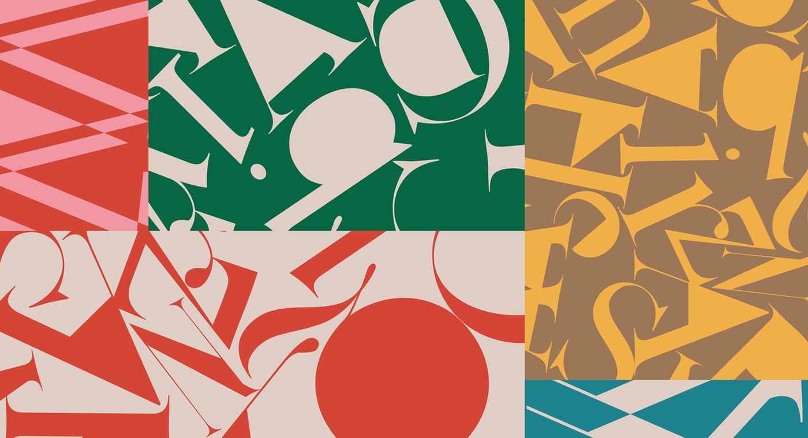

William Caslon introduced the Caslon typeface in 1722, drawing inspiration from 17th-century Dutch old style designs which had gained popularity in England. Caslon’s original old style typefaces were intended to be versatile and legible for body text, ideally ranging from 6 to 14 points. They quickly became widely used in magazines, journals, books, and corporate communications due to their exceptional functionality. Benjamin Franklin favored Caslon’s typefaces almost exclusively and the Declaration of Independence was printed in Caslon. Carol Twombly adapted the Caslon design for Adobe in 1990, studying specimen pages printed by William Caslon from 1734 to 1770. The OpenType Pro version, released through Adobe, consolidated previously separate fonts, added support for Central European languages, and included extra ligatures. This adaptation expanded the typeface’s usability, making it more versatile and accessible for modern design.
Baskerville
Baskerville was created by John Baskerville in 1757 in Birmingham, England, during the Age of Enlightenment and the dawn of the Industrial Revolution. Inspired by Caslon, Baskerville aimed to refine and improve its legibility, experimenting with readability, paper, and ink manufacturing processes to achieve higher-quality printing. The typeface was cut into metal plates for printing presses, reflecting Europe’s shift from ornate, asymmetrical designs to Neoclassical aesthetics. Baskerville served as a transitional typeface, bridging the gap between old-style typefaces like Caslon and modern typefaces such as Didot and Bodoni. In 2016, Baskerville Display PT font was released by ParaType to be used by Adobe. Its designers are Arina Alaferdova and Dmitry Kirsanov.
Comparison
Similarities
Both Hs have a similar size and style of serif, with Caslon's (left) being slightly more irregular and Baskerville’s (right) more refined and structured. Both letters have a similar high contrast between thick and thin strokes, which is evident in the thin stroke of the horizontal bar..Both share a similar oval shape, with Baskerville (right) having a slightly more geometric and balanced form than that of Caslon (left). Both display high contrast in stroke thickness, emphasizing an elegant, refined appearance.
Differences
Caslon (left) and Baskerville (right) have distinctly different capital letter Qs. Caslon's Q has a longer, flatter tail that Baskerville's. The tail of the capital Q in Baskerville is distinctive and swash-like. It has a more refined, elegant curve that curls downward and to the left.Caslon’s ear (the small stroke at the top right of the "g") is more pronounced and slightly curved. Baskerville’s ear is more delicate and refined, adding to its neoclassical style. The tail (the connection between the upper and lower portions) in Caslon is more organic and slightly irregular. Baskerville’s tail is smoother and more controlled, giving it a more deliberate, symmetrical appearance.
Examples and visual references
Caslon

The Declaration of Independence was famously printed in Caslon as Benjamin Franlkin was a fan of the typeface.

Bernard Malamud's book, The Magic Barrel, uses Caslon on it's cover.
Baskerville

This Nina Chuba event poster for Hamburg and Berlin shows in 2021 featured Baskerville in a bold style.

This vibrant artistic composition uses Baskerville glyphs as decorative shape elements, highlighting its distinct serifs and letterforms.